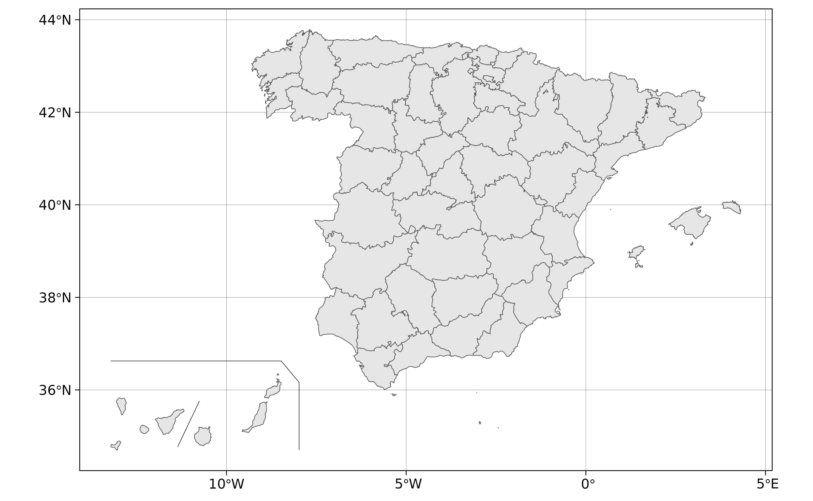
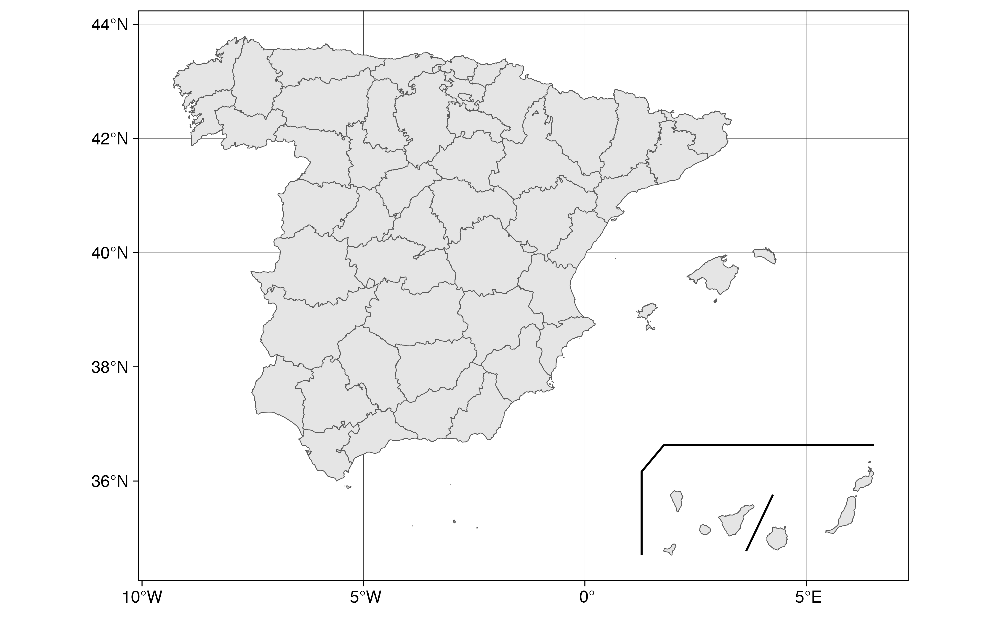
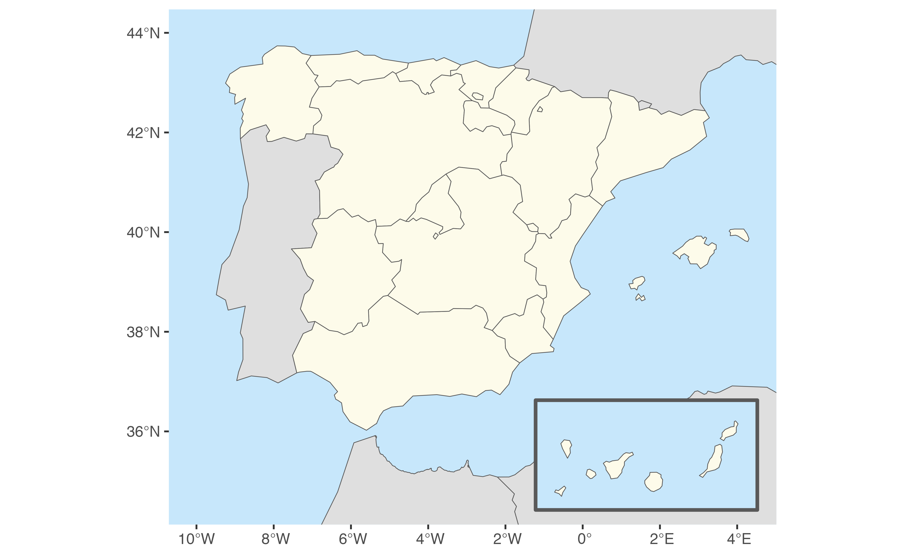

Get sf lines and polygons for insetting the Canary Islands
Source: R/esp_get_can_box.R
esp_get_can_box.RdWhen plotting Spain, it is usual to represent the Canary Islands as an inset
(see moveCAN on esp_get_nuts()). These functions provides complementary
lines and polygons to be used when the Canary Islands are displayed
as an inset.
esp_get_can_box()is used to draw lines around the displaced Canary Islands.
esp_get_can_provinces()is used to draw a separator line between the two provinces of the Canary Islands.
Usage
esp_get_can_box(style = "right", moveCAN = TRUE, epsg = "4258")
esp_get_can_provinces(moveCAN = TRUE, epsg = "4258")Arguments
- style
Style of line around Canary Islands. Four options available:
"left","right","box"or"poly".- moveCAN
A logical
TRUE/FALSEor a vector of coordinatesc(lat, lon). It places the Canary Islands close to Spain's mainland. Initial position can be adjusted using the vector of coordinates. See Displacing the Canary Islands.- epsg
projection of the map: 4-digit EPSG code. One of:
"4258": ETRS89"4326": WGS84"3035": ETRS89 / ETRS-LAEA"3857": Pseudo-Mercator
Value
A sf polygon or line depending of style parameter.
esp_get_can_provinces returns a LINESTRING object.
Displacing the Canary Islands
While moveCAN is useful for visualization, it would alter the actual
geographic position of the Canary Islands. When using the output for
spatial analysis or using tiles (e.g. with esp_getTiles() or
addProviderEspTiles()) this option should be set to FALSE in order to
get the actual coordinates, instead of the modified ones.
See also
Other political:
esp_codelist,
esp_get_capimun(),
esp_get_ccaa(),
esp_get_comarca(),
esp_get_country(),
esp_get_gridmap,
esp_get_munic(),
esp_get_nuts(),
esp_get_prov(),
esp_get_simpl_prov()
Examples
Provs <- esp_get_prov()
Box <- esp_get_can_box()
Line <- esp_get_can_provinces()
# Plot
library(ggplot2)
ggplot(Provs) +
geom_sf() +
geom_sf(data = Box) +
geom_sf(data = Line) +
theme_linedraw()

# \donttest{
# Displacing Canary
# By same factor
displace <- c(15, 0)
Provs_D <- esp_get_prov(moveCAN = displace)
Box_D <- esp_get_can_box(style = "left", moveCAN = displace)
Line_D <- esp_get_can_provinces(moveCAN = displace)
ggplot(Provs_D) +
geom_sf() +
geom_sf(data = Box_D) +
geom_sf(data = Line_D) +
theme_linedraw()

# Example with poly option
# Get countries with giscoR
library(giscoR)
# Low resolution map
res <- "20"
Countries <-
gisco_get_countries(
res = res,
epsg = "4326",
country = c("France", "Portugal", "Andorra", "Morocco", "Argelia")
)
CANbox <-
esp_get_can_box(
style = "poly",
epsg = "4326",
moveCAN = c(12.5, 0)
)
CCAA <- esp_get_ccaa(
res = res,
epsg = "4326",
moveCAN = c(12.5, 0) # Same displacement factor)
)
# Plot
ggplot(Countries) +
geom_sf(fill = "#DFDFDF") +
geom_sf(data = CANbox, fill = "#C7E7FB", lwd = 1) +
geom_sf(data = CCAA, fill = "#FDFBEA") +
coord_sf(
xlim = c(-10, 4.3),
ylim = c(34.6, 44)
) +
theme(
panel.background = element_rect(fill = "#C7E7FB"),
panel.grid = element_blank()
)

# }